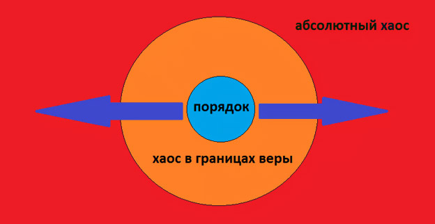

Любовь и ненависть к тайм-менеджменту
Кажется, это был 2007 год. К тому моменту я уже покинул свое последнее место работы и вот уже более года развивал свой первый бизнес. Это было весело, тяжело и почти без шансов на положительный результат. Это была фирма, занимающаяся видеонаблюдением. Естественно, я делал все ошибки, которые можно было сделать. В какой-то момент разругался с партнером и решил плюнуть на все. К тому же момент подвернулся более чем удачный – я увидел где-то в сети, что Глеб Архангельский ищет себе генерального директора (или исполнительного?). И я пошел к нему на собеседование...
Естественно, как и все вокруг, я был очарован его книгой «Тайм-Драйв. Как успевать жить и работать». Я прочитал ее на одном дыхании, и мне казалось – вот оно! Ну, елки же палки, как все оказалось просто – ешь «лягушек» каждый день, используй Outlook для планирования своих задач, дели задачи на важные и неважные, срочные и несрочные и т.д. «Лягушка» — это хорошо. Метафоры вообще хорошо запоминаются. Но вот сижу и вспоминаю, что же там было еще, в этом «методе Глеба Архангельского»? Если честно, вспоминаю с трудом. Но очень хорошо помню, что было со мной дальше, после прочтения его книги.
Я стал записывать. У меня был КПК, и, если была возможность, я записывал там что-то стилусом в экселевские таблички. Я ехал в метро и записывал. Обедал где-нибудь с друзьями и записывал. Возвращался домой и записывал. Меня спрашивали: «Что ты там все время записываешь?». «Я планирую», — отвечал я.
Я-ПЛА-НИ-РУ-Ю. Я чувствовал гордость за себя. Наконец-то, я понял, как нужно жить. Как развивать бизнес. Надо больше успевать делать – благодаря волшебной таблетке под названием «тайм-менеджмент» это так просто теперь сделать!
С чувством, что теперь будет все по-другому, я ходил месяц. Ну, может, быть два. Или три. Вряд ли больше. На четвертый месяц я стал напоминать себе зомби. Но не простого зомби, а очень занятого своими зомби-делами. Ну, знаете, какие у зомби дела могут быть? Вот ходит он, шатается по ночному городу, пугает прохожих. И все записывает, записывает, записывает в свой лэптом что-то. Планирует какую-то херню. Человеческой логике недоступную.
Я думал, это я такой ущербный. И вот увидел объявление Глеба Архангельского. Думал, он меня наконец-то научит, как быть правильным зомби, а не зомби, увлеченным своими зомби-делами. А тут еще проблемы какие-то по бизнесу. Я был совладельцем, но не был генеральным директором. Мне казалось, что наш партнер ведет нас в пропасть, но повлиять на него я никак не мог. И мне казалось – это шанс прекратить свое мучение. Забегая вперед, расскажу, что в итоге все оказалось хорошо. Я не стал исполнительным (или генеральным?) директором у Глеба Архангельского, но в итоге я стал генеральным диром в своей фирме, получил контроль, вывел фирму на качественно новый уровень и продал долю за неплохие для меня на тот момент деньги. Кстати, это компания до сих пор на рынке, и неплохо себя чувствует.
Позднее я часто возвращался к проблеме тайм-менеджмента. Пробовал GTD, пробовал другие системы. Что-то где-то вычитал, к чему-то пришел своим путем, но в итоге выработал несколько правил, которые, как мне кажется, по-настоящему подвинули меня вперед – особенно в «Текстерре», которой я начал заниматься как раз после продажи первой фирмы.
Но прежде, чем двигаться в сторону этих пунктов, хочу сказать вот что. Весь «тайм-менеджмент» бесполезен, если в голове у вас сидит тезис, что ваша личная эффективность поможет избежать проблем. Не поможет. Чем более «эффективным» будете лично вы, тем с большими проблемами вам придется сталкиваться. Это как белка в колесе. Можно крутить колесо медленно, а можно быстро. Да, чем быстрее крутишь, тем больше «виртуальных» километров наматываешь. Но кто сказал, что это хорошо? И кто сказал, что в этом счастье?
Единственный способ избавиться от зависимости от «лягушек» и «экселей» – это признать тот факт, что проблемы и последующее их исправление – это нормальная часть нашей жизни. Кто-то относится к проблемам нормально, кто-то ненавидит, но проблемы – это нормально! Люди, действительно, успешные в бизнесе в большинстве своем – это люди, решающие проблемы. Не думающие, как избежать их, выстроить, классифицировать по тому или иному рангу – это люди, идущие в зону хаоса и расширяющие границы своей веры постоянно.
Человеческий мозг устроен очень странным образом – он стремиться к «зоне комфорта» — туда, где нам легко и все понятно. «Зона комфорта» — это порядок. Когда вы покупаете одни и те же продукты в одних и тех же магазинах, когда вы заправляетесь на одних и тех же заправках, которые по пути, когда вы знаете, что будете делать на работе сегодня и что будете делать дома в ближайшие выходные – знайте, вы находить в «зоне комфорта». Это не хорошо. Это не плохо. Это свойственно всем нормальным людям. Вот такую схемку я набросал в Пэинте:

Но если вы хотите чего-то добиться в любой области, единственный вариант – это идти в зону абсолютного хаоса. Нужно абсолютный хаос полюбить. Жить в хаосе невозможно, но если вы пойдете в зону абсолютного хаоса – ваша ежедневная жизнь начнет смещаться из зоны абсолютного порядка в зону эдакого полу-хаоса, — хаоса, лежащего в границах вашей веры, который не упорядочен вами до конца, но фактически вы знаете, как это сделать. И чем настойчивее вы стремитесь в зону хаоса, тем быстрее расширяются границы вашей веры.
Как же полюбить и начать двигаться в зону хаоса? (Помните, что ваш мозг будет постоянно звать вас обратно – в зону порядка, контроля и рутины).
Первое. Перестаньте, наконец, корить себя за невыполненные задачи. Вы же не зомби – вы живой человек!
Второе. Больше концентрируйтесь на основных для вашей жизни вещах, а не о текучке. Выполняйте больше целевых действий, и меньше нецелевых – какими бы нужными в данный момент времени они вам ни казались. Как правило основные для вашей жизни вещи лежат за пределами границы веры – и нужно методом проб и ошибок искать дорогу к ним, а не заниматься протаптыванием тропинок в зоне порядка.
Третье. Прежде чем что-то «запланировать», задайте себе вопрос – да какого фига? Действительно ли выполнение этого действия приближает меня к моей главной цели?
Четвертое. Не надо никуда «планировать» дело, если его можно выполнить за 5 минут – просто возьмите и сделайте.
Пятое. Надоело что-то делать изо дня в день? Наймите сотрудника на эту работу. Я серьезно. Вы зря считаете, что ваши сверхважные дела больше никто выполнить, кроме вас, не может.
Шестое. Каким бы эффективным ни были лично вы, к сожалению, это не сильно влияет на ваш бизнес. Реальный рост бизнеса достигается не за счет личной эффективности руководителя, а за счет эффективных бизнес-процессов.
Седьмое. Позволяйте себе поэкспериментировать. Иногда полезно взять и просто отодвинуть все свои дела к черту.
Восьмое. Спите долго. У меня с этом реальная проблема, нужно себя заставлять спать!
Девятое. Если то, что раньше лежало для вас в зоне хаоса, стало привычной рутиной (а оно в какой-то момент обязательно станет) – не продолжайте делать эту работу по привычке. Пора нанимать хорошего исполнителя на эту работу.
Вот у меня сейчас стоит сложная задача. Неподъемная. Увеличение трафика нашего собственного сайта с 10 тыс. уников до 20 тыс. уников в месяц за три месяца, без учета PPC и других платных каналов. Я не знаю, как решить эту задачу здесь и сейчас. И это значит, что я делаю все правильно.
Ну, а что было в кабинете Глеба? Пришел, увидел очень уставшего человека – может быть, это было временно, но я запомнил гуру именно таким: уставшим. Смотреть, что там происходит за окном, ему было гораздо интереснее, чем общаться со мной. Были какие-то вопросы – типа, что делал, чего добился. Как я провожу свой рабочий день. Какие задачи приходится решать. Спрашивал меня Глеб с неохотой, с первого же его взгляда мне было понятно, что работать к себе он меня не возьмет. Выходил я от него с облегчением. Первое, что я сделал, вернувшись в свой офис – снес со всех лэптопов и ноутов все эти списки своих «лягушек». Они до сих пор где-то лениво дрыгают своими ножками в моем прошлом. Ну и пусть – не жалко.